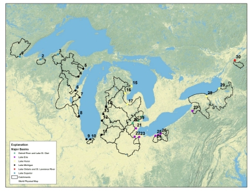

Forecast/Nowcast Great Lakes Nutrient and Sediment Loadings
Template #76

U.S. Geological Survey scientists will collect water-flow and water-quality data from tributaries to the Great Lakes to measure natural and human-caused sources of nutrients and sediment to the Lakes. Thirty of the 59 major downstream flow gages are continuously operating for water-quality samplings at these sites.
Monitoring continued at tributary monitoring sites using automated samplers and water quality multi sensor probes, at 30 of the Great Lakes National Monitoring Network sites. These sites are being monitored to:
- provide baseline information
- provide support for measuring restoration progress
- demonstrate the ability to reduce monitoring costs through the use of real-time sensors
The work builds on current USGS monitoring efforts and those of partners in the Great Lakes. The results of this effort will provide information of current loads and measure the effectiveness of restoration efforts in selected tributaries.
One to three years of data is now available depending on the sites. Water samples collected at the 30 tributary monitoring sites include suspended sediment; nutrients; and chloride. One sample per storm event is analyzed for major ions. At each site, monthly base flow samples are being collected, plus up to eight storms, with 6 samples submitted per storm (60 environmental samples per site). Samples are being used to develop statistical relations between continuously measured parameters and lab analyzed parameters. In-situ water-quality sensors deployed at each site measure turbidity, temperature, conductivity, dissolved oxygen, and pH every 15 minutes.
A preliminary software package for development of statistical models for prediction of nutrient and sediment concentrations using real-time sensors was developed and is being tested. This package will be used for exploration of real-time surrogate models at 30 tributaries for up to 6 parameters per site. These models will help in computation of loadings as well as real-time estimates of parameter concentrations. Surrogate parameters include all data from the in-situ water quality sensors, flow, and seasonal variation. This software package will ultimately increase efficiency of initial development and year-to-year validation or recalibration of the real-time surrogate models. Once the package is finalized this summer, it will also be available as an open-source software package for use in the R-statistical computing environment.
Dan Sullivan, djsulliv@usgs.gov 608-821-3869